| Previous document | Next document |
We do not define what is a fractal in this document. We postpone this task to the next document; namely, the document . In the present document, we introduce a method to generate fractals.
In our study of DDS in the previous document, we have considered functions from to itself and computed iterations starting at an initial point. We now consider set valued functions acting on sets and compute iterations starting with an initial set.
This section is theoretical. Readers who do not have the mathematical background may skip this section and resume reading with the next section where we provide examples of fractals produced with the help of iterative function systems.
A metric space is a set with a metric . We denote this metric space by . The distance between a point and a set is defined by , and the distance from the set to the set is defined by .
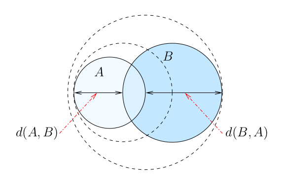
We note that may not be equal to as illustrated in the figure above.
Proposition: Suppose that the metric space is complete; namely, every Cauchy sequence converges. Let be the space of non-empty compact subsets of . Then, the function defined by
for all is a metric on . Moreover, the metric space is complete. The metric is called the Hausdorff distance or Hausdorff metric.
A proof of this proposition is found in the book by . Note that for and , we have that and because and are compact sets.
Proposition Ⅰ: Suppose that and are two collections of elements in . Then .
Proof: We have that ...
for all . Moreover, since
for all . and , we get that
and similarly that for all . It follows that
for all . We finally conclude that
for all . This proves the proposition for . A simple induction on completes the proof of the proposition. ∎
A function is a contraction if there exists a constant such that and for all . A contraction is obviously a continuous function. The constant is called a contraction factor.
If is a continuous function, then it maps compact sets to compact sets. Hence, the function induces a function in a natural way. Suppose that is a collection of continuous functions . We define a function by
for all . This function is well defined because the finite union of compact sets is a compact set.
Definition: A (hyperbolic) iterative function system (IFS) on a complete metric space is a collection of contractions from to itself.
Proposition Ⅱ: Suppose that is an IFS where each function is a contraction with a contraction factor . Then the function is a contraction with a contraction factor .
Proof: Given , we have that for all and . Hence ...
for all and so
Similarly, we have that . Thus It follows from that
This concludes the proof. ∎
Theorem Ⅲ: If is a complete metric space and is a (hyperbolic) IFS, then has a unique fixed point; namely, there exists a unique set such that . Moreover, for all sets , the sequence of sets defined by converges to with respect to the Hausdorff metric as .
The previous theorem is a direct consequence of the Contraction Mapping Theorem because is a complete metric space and is a contraction.
In the examples that we consider below, the space is the real plane and the metric is the Euclidean metric. The fractals that we draw are the fixed points of functions induced by some IFS . The challenge is to choose the IFS that produces the fractal that we want. We address this issue in the section below.
The first example is the example of the must famous IFS.
Example A - Sierpinski Triangle: The following figure shows the famous Sierpinski gasket or Sierpinski triangle.
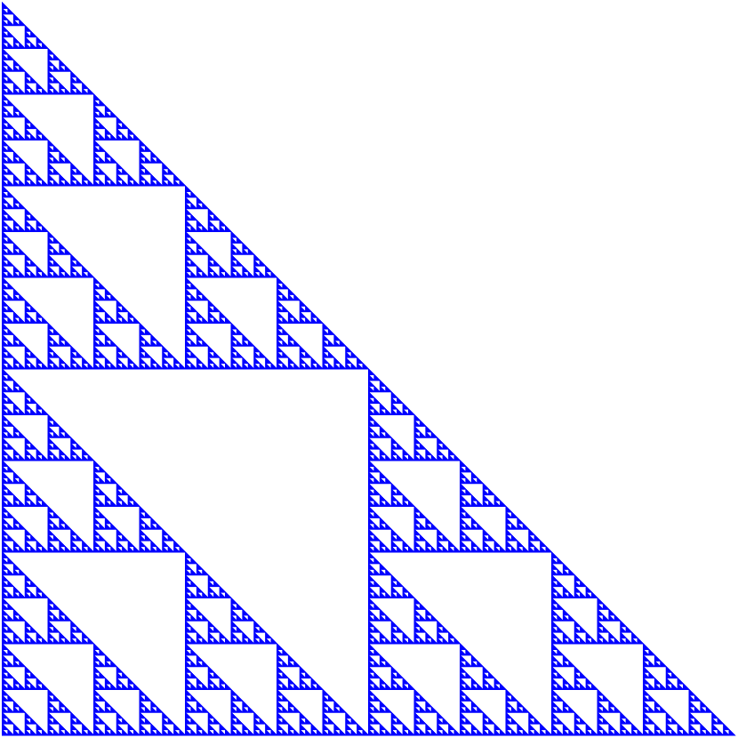
It is a typical example of a fractal. We give a definition of fractals in the document . We do not need this definition right now.
The Sierpinski triangle is the fixed point of the function induced by the IFS , where
and are dilatations followed by translations. is only a dilatation. We now explain in a graphical way how the Sierpinski triangle is drawn using the IFS composed of the three functions described above.
This four steps are illustrated in the figure below.
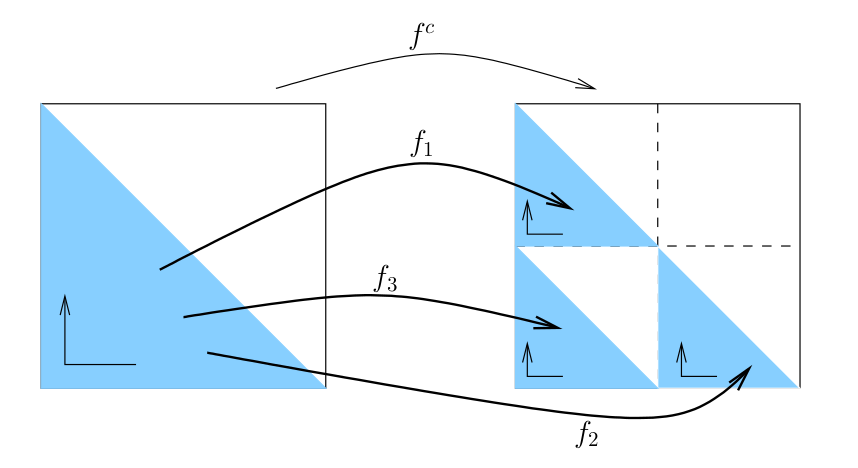
We repeat the second, third and fourth steps above with the new set formed of three filled triangles. The next figure illustrates the second iteration of the second, third and fourth step described above.
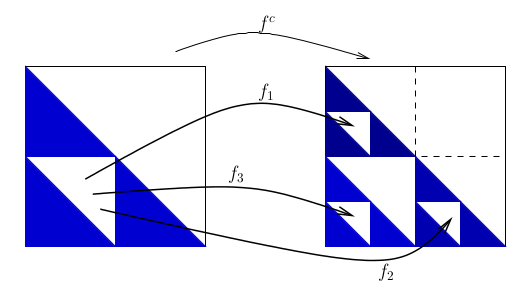
We repeat this procedure until we are happy with the figure that we get. Usually, we stop when we can no longer observe any variation in the figure.
As we mentioned in the theoretical section above,
independently of the set of points that we choose initially, we always
get the Sierpinski triangle after an infinite
number
of iterations.
We need about 20431 bytes (in png format) to store the figure of the Sierpinski triangle above on a computer. Instead of storing on the computer all the pixels of the figure of the Sierpinski triangle, we only have to store on the computer the mathematical formulae of the functions that compose the IFS (e.g. using Matlab commands.) We assume that the procedure to iterate the function induced by an IFS is available (e.g. the matlab function ifs2 provided in the document in Matlab.)
Example - Variations of the Sierpinski Triangle: The three functions of the IFS used to obtain the Sierpinski triangle were simple compositions of dilatations and translations of the initial set. We get interesting fractals if we consider also reflections and rotations by multiples of .
We draw below the fixed point of the function induced by the IFS , where
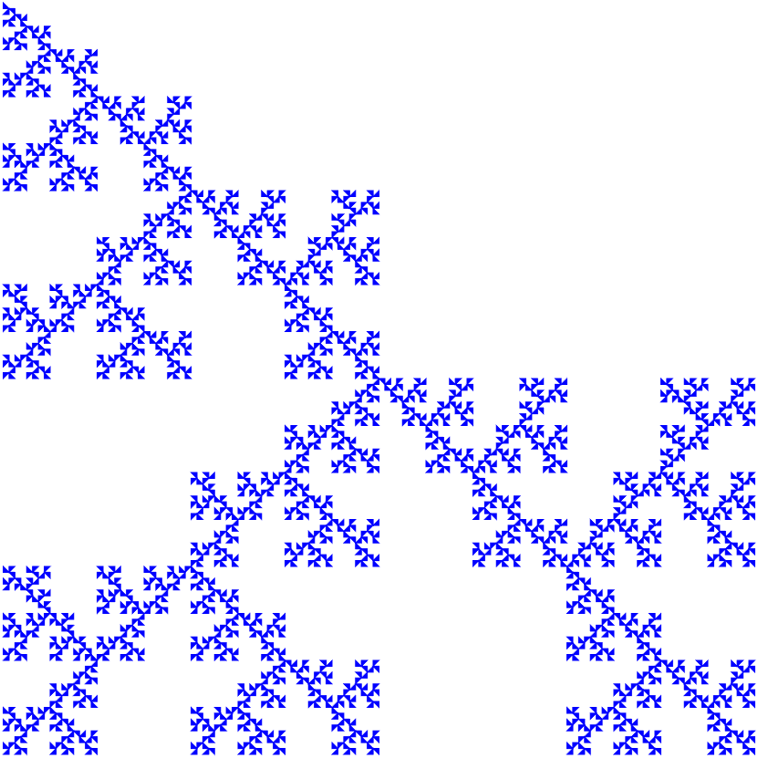
The function is the composition of a dilatation by followed by a translation by . The function is the composition of a reflection through the vertical axis followed by a dilatation by and a translation by . Finally, the function is the composition of a counterclockwise rotation by followed a reflection through the horizontal axis, a dilatation by and a translation by . The following figure illustrates the action of these functions on the filled triangle .
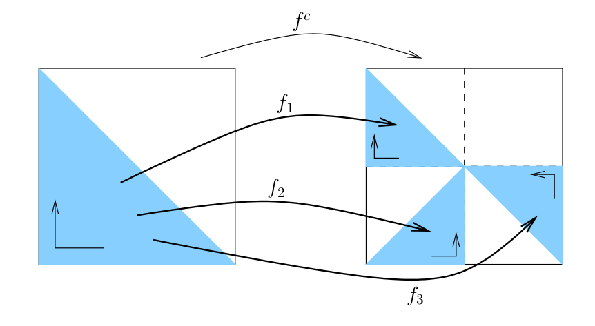
The reader will find in the book by
a list of all the possible variations of the Sierpinski triangle.
They refer to them as the output of the
multiple reduction copy machine
.
Example - Ferns: The following image of a fern has been produced with an IFS.
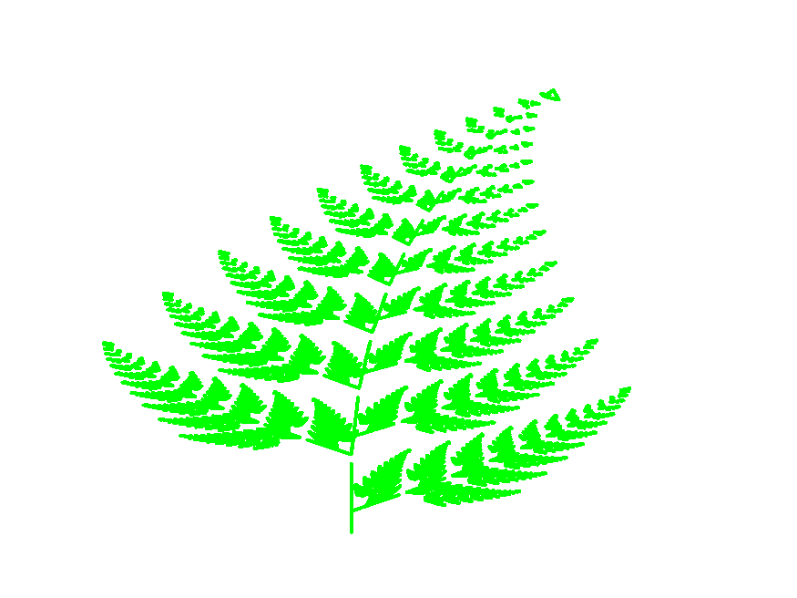
The fern above is the fixed point of the function induced by the IFS , where
To visualize the action of the four functions above, it suffices to select a simple set like a triangle and to compute only one iteration of the function using the graphical application provided at the end of this section. We get the four images resulting from the action of the four functions of the IFS on the simple set chosen.
Example - Leafs: The following image of a leaf has been produced with an IFS.
The leaf above is the fixed point of the function induced by the IFS , where
As for the fern above, to visualize the action of the four functions above, it suffices to select a simple set like a triangle and to compute only one iteration of the function using the graphical application provided at the end of this section. We get four images resulting from the action of the four functions of the IFS on the simple set chosen.
Examples: We add two more examples to our list. The fixed point of the function induced by the IFS , where
is a dead tree.
The fixed point of the function induced by the IFS , where
is a crystal.
The reader may use the graphical application below to draw the dead tree and the crystal associated to the two previous IFS. As usual, to visualize the action of the functions composing these IFS, it suffices to select a simple set like a triangle and to compute only one iteration of the function using the graphical application below. We get several images resulting from the action of the functions of the IFS on the simple set chosen.
The following graphical application can be used to draw the fixed
point of the function
induced by each of the IFS presented above. We have
also added the option to draw the fixed point of the function
induced by the IFS with condensation
given in the
section below. The computer program used to draw the fixed points is
written in JavaScript which is not at all a computer language for
number crunching. Moreover, because of the limited number of pixels
of the computer screen, there is a lower limit on the size of
the components
of the fixed point that can be
drawn.
|
In addition to a pull-down menu to select an IFS, there is also a pull-down menu to select one of the three initial sets represented by polynomial curves. The user can also choose the number of iterations. Only a small number of iterations should be used, no more than 10 or 11, to avoid slowing down too much the browser response time. Browsers normally display a warning in such situation. It is possible to select the number of points per unit for the image. Increasing this number should normally improve the quality of the drawing. The improvement is however limited by the quality of the computer screen. We have to keep in mind that increasing the number of points per unit increases the computing time. |
Remark: We have used the Matlab function ifs2 to produce the images of the Sierpinski triangle, the variation of the Sierpinski triangle, the fern and the leaf above. This function is described in the document in Matlab.
This method to draw the fixed point of the function induced by an IFS has been proposed by .
We assume in this section that where is the Euclidean distance for . This assumption simplifies the presentation but a similar presentation can be done for any complete metric space .
Suppose that is an IFS, is the function induced by this IFS and is the fixed point of the function . Given and , our goal is to find a set such that . Let for Since as , we can take for large enough. However, computing the iterations can be very demanding in term of memory space on a computer. We explain below how to find a set that may not be exactly one of the sets but nevertheless satisfies and requires less memory space on the computer.
If we look closely at the action of the iterations of , then we find that is the union of the sets for . The sets for the IFS associated to the Sierpinski triangle are illustrated in the figure below. To draw this figure, we have assumed that the set is the filled triangle with vertices at , and .
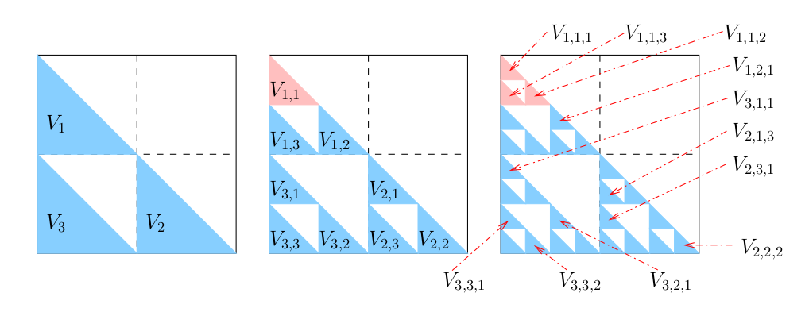
We assume that where is the the fixed point of .
We illustrate this situation with the set in pink in the figure above. The IFS associated to the Sierpinski triangle is not a very good example of the procedure above because all the functions of the IFS have the same contraction factor of . Thus, if for one sequence of indices, then for all sequences of indices. In general, the functions that form an IFS do not have all the same contraction factor. The IFS for the fern above is one such example.
We claim that after a finite number of iterations of the procedure above, we get sets of diameters less than such that their union covers . To prove this claim, suppose that is a contraction factor for . In particular, is a contraction factor for for . Then . Using the induction principle, we get that
for all . Thus . Hence, we may assume that . Since for , we have that as . Thus, as . This result proves that the number of iterations of the procedure above is finite because with respect to the Hausdorff measure as , and is compact. In particular, can be covered by a finite number of sets of the form with a diameter less than if is fixed and large enough to have . Since is the fixed point of , the union of the sets of the form with fixed covers .
Let . be the set of all vectors of the form with such that that we obtained with the procedure above. The set is a finite set. Given , let . We have by construction that .
There are two unanswered questions that come out of the previous paragraphs. First, how can we find ? It suffices to take a fixed point of a function of the IFS. The functions that we consider are of the form where is a matrix and is a column vector. It is easy to solve the linear system of equations to get a fixed point for .
The second question is how can we compute the diameter of a set ? The answer is that we do not computer this diameter but we compute instead the smallest upper bound to this diameter that we can find. Since , instead of testing for , we test for . If , then we assume that though we may have that . Using this approach to estimate may imply a few more iterations of the procedure above than theoretically expected but it is still generally less demanding in term of computer time than trying to compute directly the diameters of the sets . We therefore need to find the smallest contraction factors that we can. We do not want to greatly over-estimate these contraction factors because this will imply extra iterations of the procedure above and therefore a larger set than necessary. As the next example shows, using is not a good idea.
Example: Suppose that with and with for some numbers . Then
for all with an equality when . Thus is the smallest contraction factor for . Similarly, is the smallest contraction factor for . Therefore, if we use , then we get . However, where and . Hence, the smallest contraction factor for is , a value that can be a lot smaller than . For instance, with and , we get . Thus is times bigger than the smallest contraction factor for .
To estimate the smallest contraction factor for , we therefore need to compute . Suppose that for some values . It is shown in the classical textbook by that the smallest contraction factor of is at most equal to . We may use this value as an estimate of the smallest contraction factor of .
Example (continued): In the previous example, we have that . Thus and . Hence . This value is only twice the smallest contraction factor of .
It is proved in linear algebra that the smallest contraction factor for the function is the largest singular value of ; namely, . This is obviously the best method to estimate the smallest contraction factor of if we are ready to accept the extra computer time to evaluate the singular eigenvalues of .
There is a third question that we have ignored so far but cannot ignore to implement the adaptive cut method. We have assume that in the discussion above. But we do not know . So, how can we choose ? In fact, we may assume that and choose to the best of our knowledge (i.e. guess) a value for . We do not need to have a precide definition of to apply the previous procedure. We only need an estimate of its diameter.
Remark: The adaptive cut method is implemented in the Matlab function ifs_adaptive that is given in the section of the document in Matlab.
Example: There is another method to draw the Sierpinski triangle using a random number generator. We choose a point in the plane. For each value of , we use the computer number generator to select a number and set
If we plot the points of the finite sequence
where
is very large, we get the shadow
of the Sierpinski
triangle. To get a better image, it is preferable to start plotting
the points
from a value of
larger then
.
The first transient points are usually not very closed to the set
representing the Sierpinski triangle. The number of iterations
must be very large and the random number generator of the computer
must be really … really good. The following image of the
Sierpinski triangle was produced with
iterations of the procedure above starting from the point
which is a point of the Sierpinski triangle.
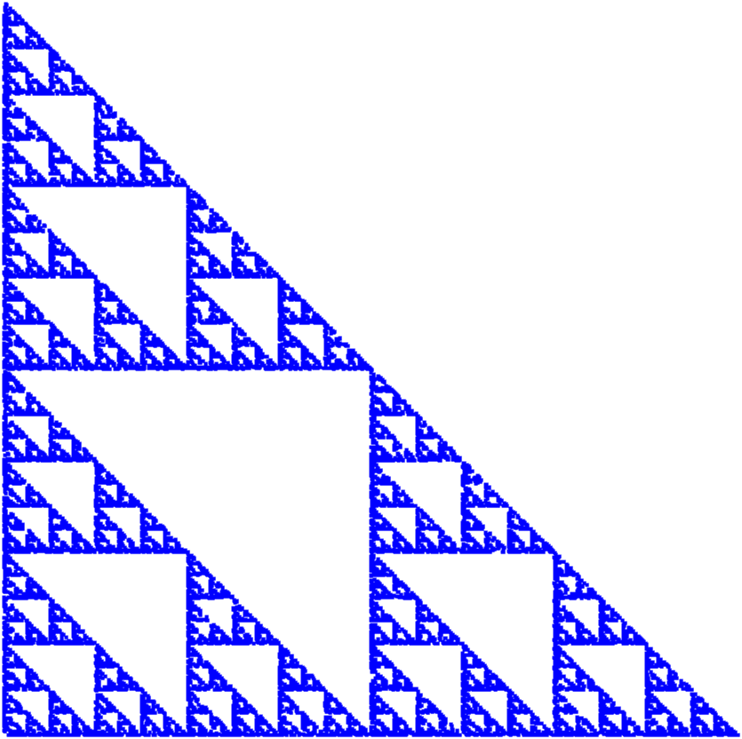
The result is not bad.
This method to draw the Sierpinski triangle can obviously be generalized to draw the fixed point of the function induced by an IFS . We choose a point in the plane. For each value of , we use the computer number generator to select a number and set
If we plot the points of the finite sequence
where
is very large, we get the shadow
of the fixed point
.
This method to draw the fixed point of the function
induced by an IFS is called the chaos game. Assuming that the
random generator of the computer has a uniform distribution, then at
each iteration,
This method complicates the because, in addition to the problem of determining the function that compose the IFS, we have just added the problem of determining the values of the probabilities . Nevertheless, This method is very often used to draw the fixed point because it requires little memory space on the computer, only computing time.
Definition: An IFS with probabilities is a pair , where is an IFS and is a collection of probabilities for the chaos game.
In the example for the Sierpinski triangle above, we have and we have selected and . We have simply assumed that at each iteration the functions had an equal probability of to be selected. The image of the Sierpinski triangle is not bad. We now consider the IFS for a fern proposed by .
Example: We consider the IFS . where
We use the chaos game to draw the fixed point of the function induced by the IFS above. We have that .
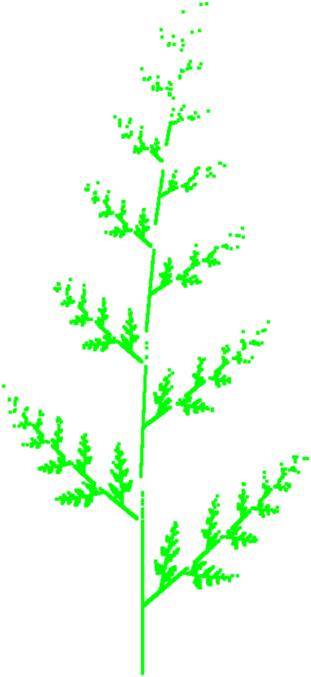
We observe that the distribution of density of points is not constant over all the fern in the figure on the left. There are more points in some parts of the fern than others. Increasing the number of iterations may finally produce the complete fern but a very large number of iterations would have only produced points that have already been plotted at the level of resolution of the computer screen. This is not an efficient use the chaos game. The figure in the middle is surprisingly good but it is the figure on the right which is the best.
Assuming that the IFS
is known (we will come back on the subject of selecting the IFS in
the section below), how can we choose the best
probability distribution for the random selection of the function
at each iteration of the chaos game? There is a theoretical answer to
this question given in the Section below. For the applications, we present two partial
answers below.
The functions
that we consider for our IFS are of the form
for a given
matrix
and vector
.
If we use the Euclidean norm on
,
then we have that
for all sets
.
Let
for
.
We select
for
where
is a very small fixed positive value. Thus, at each iteration, the
probability of selecting the function
is
.
This small value
is introduced to avoid the situation where the probability of
selecting a function
would be null because
as it is the case for instance with the function
of the IFS associated to the fern above. This method to determine the
values of the
is good when the IFS satisfies the open set condition
defined in the section of the document . Roughly, this condition ensures that
is negligible
for
.
The IFS associated to the Sierpinski triangle satisfies the
open set condition
but the IFS associated to the fern
above does not satisfy this condition.
Given and , if we use the adaptive cut method to draw the fixed point of the function induced by an IFS, we get the set . where is a finite set of vectors of the form . We have that . Let be the number of points in , and be the number of points in for . We set for all . We use the symbol of approximation instead of the equality sign in the previous formula because we may have that for some . Therefore, some of the may have to be slightly modified to ensure that .
Remark - Probabilistic System: For the Sierpinski
triangle, there is another probabilistic game
to draw
the Sierpinski triangle.
Let
be the point with coordinates
,
be the point with coordinates
and
be the origin (see the figure below). Suppose that we have an unbiased dice
and that
are associated to
,
are associated to
and
are associated to
.
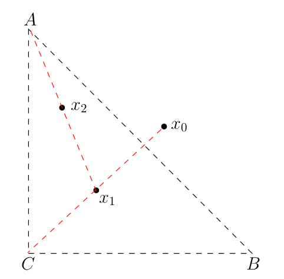
If we plot the points of the finite sequence
where
is very large, and skip the first transient
points as suggested above, we get the shadow
of the Sierpinski triangle.
Question: Which are the points
that belong to the set representing the Sierpinski triangle?
Question: What happen if the dice is biased?
As in the previous sections, we assume that is a complete metric space. A function defined by for all and some fixed element is called a condensation function and the set is called the condensation set.
Definition: Suppose that is an IFS and that is a condensation function. The collection of functions is called an IFS with condensation.
The induced function by an IFS with condensation, denoted , is define by
for all .
Proposition: Suppose that is a complete metric space and that is an IFS where each function is a contraction with a contraction factor . If is a condensation function with condensation set , then is a contraction with a contraction factor . as for .
Proof: The proof is identical to the proof of except that the last line of the proof is now ...
because . ∎
We have the following version of .
Theorem: If is a complete metric space and is an IFS with condensation, then has a unique fixed point; namely, there exists a unique set such that . Moreover, for all sets , the sequence of sets defined by converges to with respect to the Hausdorff metric as .
An example of IFS with condensation is provided by the collection of functions where
for all sets and . The condensation set is . The fixed point of the function induced by this IFS with condensation represents the tree displayed in the figure below.
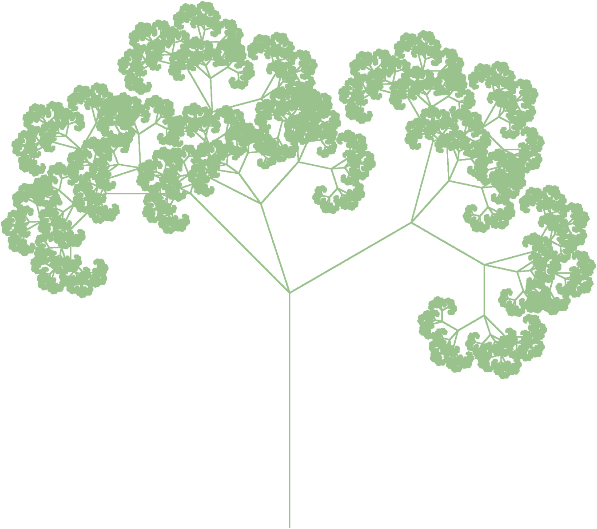
This figure was produced with the Matlab function ifs2 that is given in the section of the document in Matlab.
It is interesting to note that if an IFS depends continuously on a parameter, then the fixed point of induced by this IFS varies continuously with respect to this parameter. More precisely, we have the following result.
Theorem: Suppose that and are two metric spaces with complete and compact. Moreover, suppose that is a collection of functions such that, for each , the function is a continuous function that satisfies for all and , where is a continuous function. Let be the function defined by for all and . If is the fixed point of , then as , where is arbitrary but fixed. Note that means that .
Proof: Note that, for each , the collection is an IFS. A contraction factor for the function induced by this IFS is . ...
We first prove that is continuous with respect to it second variable. Choose . Given and , we have that
The function is uniformly continuous on the compact set because it is continuous on this set by assumption. Thus, there exists such that for all if . Hence,
for . Similarly, we get that for . Thus for . If we take , then it follows from that
for .
Since is a continuous function on the compact set , there exists such that . Let . Then and for all and . Proceeding as we did in the proof of , we get that for all and .
Given , we have that
Therefore
as with arbitrary but fixed. ∎
It follows from the previous theorem that, with enough computer time, we could create animation videos using fractals. For instance, a leave blows by the wind.
As usual, we assume that is a complete metric space. A possible metric on the product space is defined by for all . We have that is a complete metric space. Since for all and , and for all , we get that is defined by for all . We also have that is a complete metric space.
Suppose that and are two IFS where the functions are contractions with contractions factor for and all . For , suppose that are two subsets such that and . We define a function as it follows.
for all . It can be proved that satisfies the contraction mapping theorem. Thus, we have a theorem similar to .
Theorem: If is a complete metric space, and and are two (hyperbolic) IFS, then has a unique fixed point; namely, there exists a unique set such that . Moreover, for all sets , the sequence of sets defined by for converges to with respect to the Hausdorff metric as .
Example: Suppose that and are two IFS. Moreover, suppose that , , and . We get the function defined by
for all . This function is represented by the following graph.
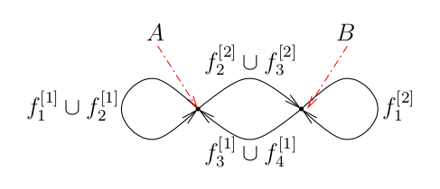
Obviously, what we have described for the product space can be generalized to the product space of more copies of .
Most of the IFS that we have presented in the previous sections come from the books listed in the at the end of this document. It is intuitively easy to create IFS to generate figures like the Sierpinski triangle. But how can we find an IFS that generates a flower for instance? Suppose that a compact set represents some figure that we would like to generate with an IFS. The next theorem gives an upper bound on the Hausdorff distance between the set and the fixed point of the function induced by an IFS. This theorem does not give us an IFS to generate the set but it at least allows us to test if an IFS generates a set closed to the set .
Theorem (Collage): Suppose that is a complete metric space and that . Moreover, suppose that is an IFS and that is a contraction factor for the induit function by this IFS. If , then where is the fixed point of the function .
This theorem is nothing else than a reformulation of a well know result about contractions on complete metric spaces.
Proposition Ⅳ; Suppose that is a complete metric space and that is a contraction with a contraction factor . If is the fixed point of , then for all .
The problem of finding an IFS that generates a given compact set is known as the inverse problem for IFS. This is not an easy problem to solve. Using IFS for image compression is one of the main motivations to develop efficient algorithms to solve the inverse problem for IFS. A readable introduction to this subject is given by .
For this section, we assume that the reader has a basic knowledge of measure theory. This section illustrates the role that measure theory plays in the study of IFS with probabilities. This is the entrance door to the use of IFS for neural networks, image compression, and so on.
Definition: Suppose that is a Borel measure on the compact metric space . The measure is said to be normalized if .
The reader may find some information about
measure
, measurable sets
and the
Borel algebra
in the section
of the document .
Proposition: Suppose that is a compact metric space. Let be the collection of all normalized Borel measures on . The function defined by
for all is a metric on . It is called the Hutchinson metric. Moreover, is a compact metric space.
We note that continuous functions are Borel measurable functions. Thus, the integrals in the defintion of the Hutchinson metric are well defined.
Definition: Suppose that is a compact metric space and that is the collection of all normalized Borel measures on . The Markov operator associated to an IFS with probabilities is the function defined by for .
Proposition: Suppose that is a compact metric space, that is the collection of all normalized Borel measures on , and that is an IFS with probabilities. If is the Markov operator associated to this IFS with probabilities and where is a contraction factor for , then is a contraction with contraction factor with respect to the Hutchinson metric ; namely, for all .
Proof (sketch): Let . We first prove that ...
for all . Given , since is a compact set, there exists a sequence of step functions that converges uniformly to on . It is easy to verify that
for all . Since uniformly on the compact set as , we get that and as This proves the claim at the beginning of the proof.
Let . We have that
for all and . Therefore, . Hence,
for all . ∎
The next theorem is a corollary of the previous proposition and the contraction mapping theorem.
Theorem: Suppose that is a compact metric space, that is the collection of all normalized Borel measures on , and that is an IFS with probabilities. If is the Markov operator associated to this IFS with probabilities, then there exists a unique measure such that . Moreover, for all measures , the sequence of measures defined by converges to with respect to the Hutchinson metric as .
Definition: In the previous theorem, the measure such that is called the invariant measure of the IFS with probabilities.
Proposition: Suppose that is a compact metric space, that is the collection of all normalized Borel measures on , and that is an IFS with probabilities. Then, the support of the invariant measure of this IFS with probabilities is the fixed point of the function induced by the IFS .
Proof (sketch): Let be the fixed point of the function induced by the IFS . ...
The set is invariant under the action of the IFS with probabilities . Therefore, there exists an invariant measure for the IFS with probabilities . restricted to . If we set for all Borel measurable sets , then defines a normalized Borel measure on such that . By uniqueness of the invariant measure, we have that . This implies that the support of is a subset of .
A proof that the support of is equal to uses the isometry between the set and the set , and the shift map on symbols acting on . This is a topic that we have not addressed. It is similar to what was done in the document . ∎
There exists a collage theorem for measures similar to the college theorem for IFS in the previous section. It is also a corollary of .
Theorem (Collage): Suppose that is a compact metric space and that is the collection of all normalized Borel measures on . Moreover, suppose that is the Markov operator associated to the IFS with probabilities . Finally, suppose that is a contraction factor for the function induced by the IFS . If , then where is the invariant measure of the IFS with probabilities.
As for IFS in the previous section, we have an inverse problem for IFS with probabilities. The problem is now to find an IFS with probabilities whose associated invariant measure is a given Borel measure. Let be the support of this measure. Ideally, the density distribution on of the points produced by the chaos game for the IFS with probabilities should represent the density distribution of the invariant measure on . This is a difficult area of constant research. The reader may consult the article by for an introduction to neural networks and automata using IFS with probabilities.
The content of this document is mostly based on the following books and articles.
| Previous document | Next document |